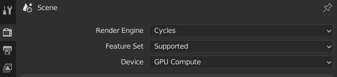
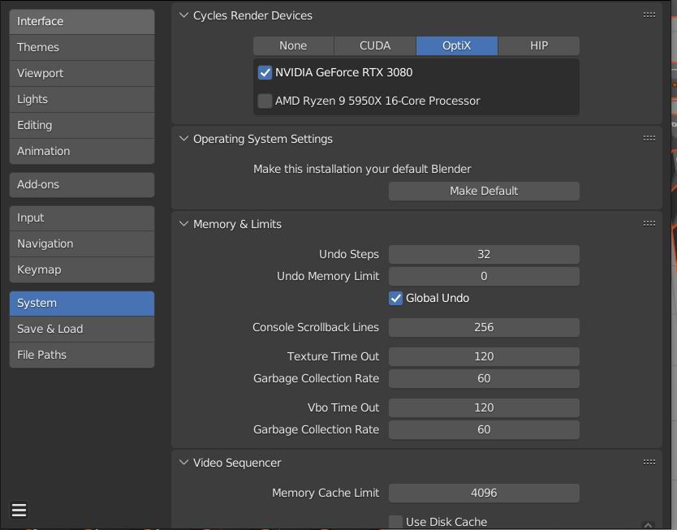
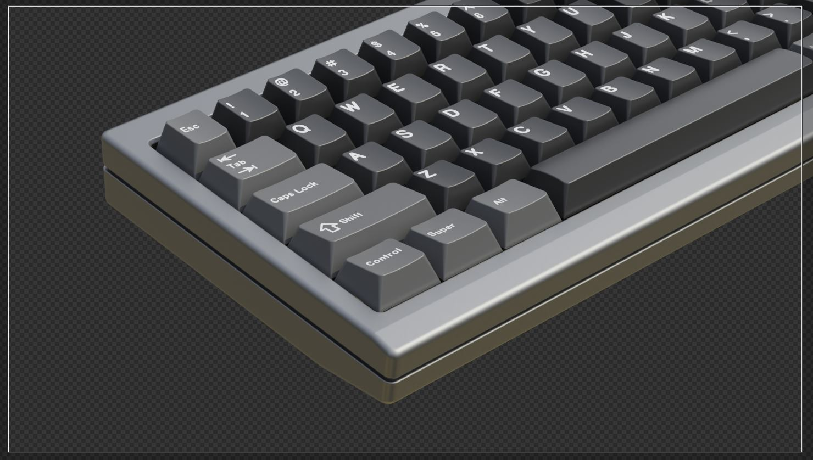
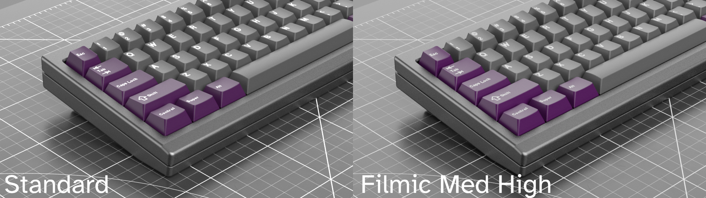
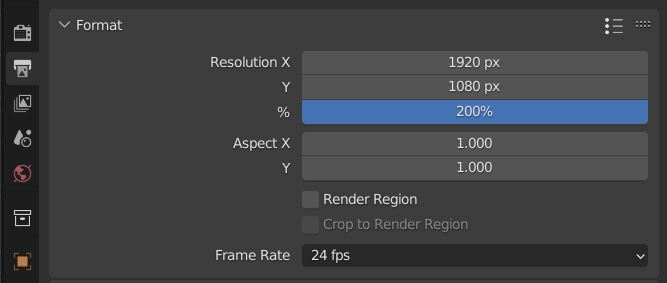
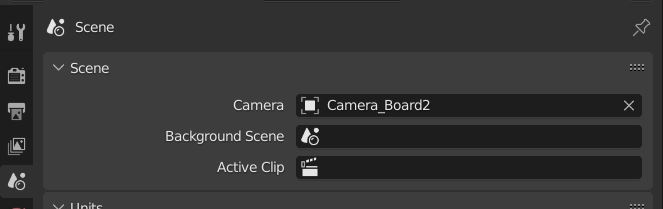
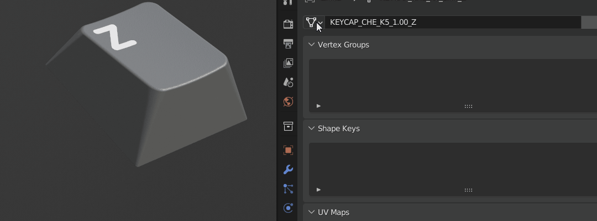
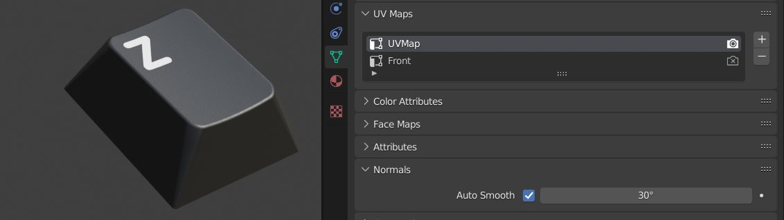
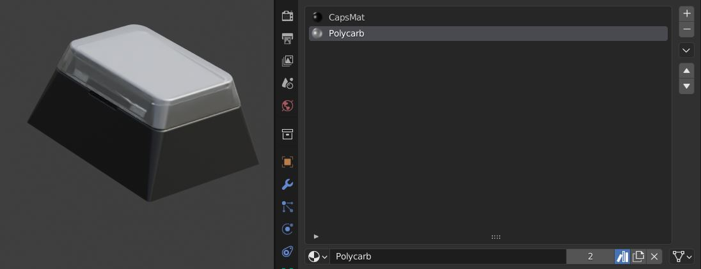
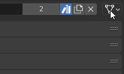

Eigenschafteneditor
Der Eigenschaftenabschnitt der Blender UI ist massiv, also werde ich nur einige der relevantesten Bereiche aufrufen.
Render-Eigenschaften
Render-Gerät

Sie können wählen, um Ihre Render zu beschleunigen, indem Sie die GPU (Grafikkarte) verwenden. Denken Sie daran, dass Sie auch das Rechengerät in den Einstellungen einrichten müssen, damit dies funktioniert.

Probenahme
Standard-Sampling ist auf 32 in der 3D-Viewport und 256 zum Renderzeitpunkt eingestellt. Wenn Sie Polycarbonat darstellen, empfehle ich Ihnen, mindestens 512 Proben auszuwählen.
Lärmbelästigung
Denoising kann hier eingestellt werden. Normalerweise prüfe ich den Denoise auf 3D-Viewport und stelle ihn auf automatisch. Stellen Sie das Startmuster auf 2 oder mehr ein, um Ihre 3D-Viewport responsive zu halten. Denoising für das finale Render ist auch im Compositor verfügbar.
Transparenter Film

Wenn Sie transparente Hintergrundbilder darstellen, müssen Sie Film>Transparent einschalten.
Farbmanagement

Dies ist ein wichtiger Abschnitt. Blender die Standardeinstellung für Farbmanagement ist Filmic, die ich hier gelassen habe, ohne das Aussehen angewendet zu haben. Einige Benutzer bevorzugen es, dies auf Standard zu setzen, weil es sich anfühlt, als ob es einfacher wäre, Farbe anzupassen. Ich bevorzuge Filmic wegen des leichten Rolloffs und setze auf einen Medium High Contrast, um ein sehr ähnliches Gefühl wie Standard zu bekommen, aber mit besserer Schattierung. Wenn Sie nach EXR exportieren möchten, spielt die Wahl keine Rolle. Es wird einfach den vollen Puffer exportieren.
Ausgabeeigenschaften
Entschließung
Hier legen Sie die Auflösung des Ausgabebildes fest. Diese Auflösung ist auch wichtig, wenn Sie UV-bezogene Dinge wie Projektionen machen.
Tipp: Wenn Sie 4k einstellen möchten, wenn es sich derzeit bei 2k Auflösung befindet, können Sie einen 200% in das Feld statt 100% eingeben.

Szeneneigenschaften
Aktive Kamera

Hier setzt man die aktive Kamera, die Blender verwendet, wenn man Render drückt.
Objektdaten Eigenschaften
Objektdaten

Überspringen Sie nicht den Objektdaten Dropdown, da es Ihnen erlaubt, jedes Objekt in ein anderes Objekt zu verwandeln, indem Sie es aus dem Dropdown auswählen.
UV-Karten

Wenn Sie auf ein Objekt UV-Map zugreifen müssen, finden Sie es hier.
Materialeigenschaften
Werkstoffindex

Objekte können mehr als ein Material an ihnen befestigt haben. Z.B. das Fenster und das nachlegierbare Keycaps haben 2 Materialschlitze für das Keycap Material und das Polycarbonat.
Material-Link

Sie können Blender feststellen, ob das an der Objektdaten befestigte Material oder das Objekt pro Objektbasis verwendet werden soll.